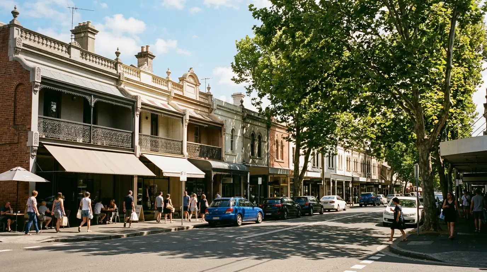
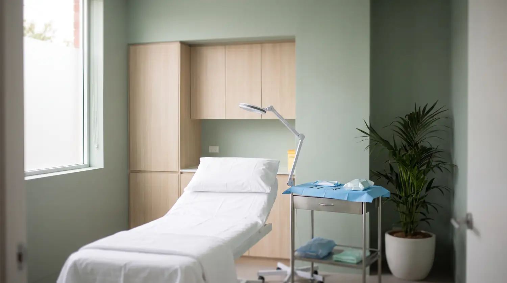

Home/Location
One address.
Enmore Road.
Everything happens in one building, in one visit — consultation, procedure and the walk back out to your car. Sydney's inner west, ten minutes from Newtown station.
Sydney · Enmore
Enmore Medical Practice
- Address
- 134–146 Enmore Rd
Enmore NSW 2042 - Phone
- (02) 7911 3295
- Appointments
- By booking only — check the calendar for the next available time.
134–146 Enmore Rd sits on the Newtown end of Enmore Road, among the shopfronts.
Getting here
Three ways in
By train
Newtown station is the closest stop on the T2 and T3 lines — roughly a ten-minute walk down King Street and onto Enmore Road.
By bus
Buses run the length of Enmore Road and King Street, with stops within a minute or two of the practice.
By car
You can drive yourself home afterwards — it's a local anaesthetic. Street parking is metered on Enmore Road and free on most of the side streets, so give yourself a few extra minutes.
Running late or can't find us? Call (02) 7911 3295 and we'll talk you in.
On the day
You'll be here about an hour
Arrive a few minutes early, see the doctor, have the procedure, and go. Consultation and procedure happen in the same visit — you don't need to come back twice.
- Bring your Medicare card and a form of ID
- Shave that morning, as shown in the instructions we send
- Wear something loose and comfortable
- Your signed e-consent will already be on file


Sydney Vasectomy Centre · Enmore
See you on
Enmore Road.
Book online and pick a time, or call the practice and we'll find one with you.